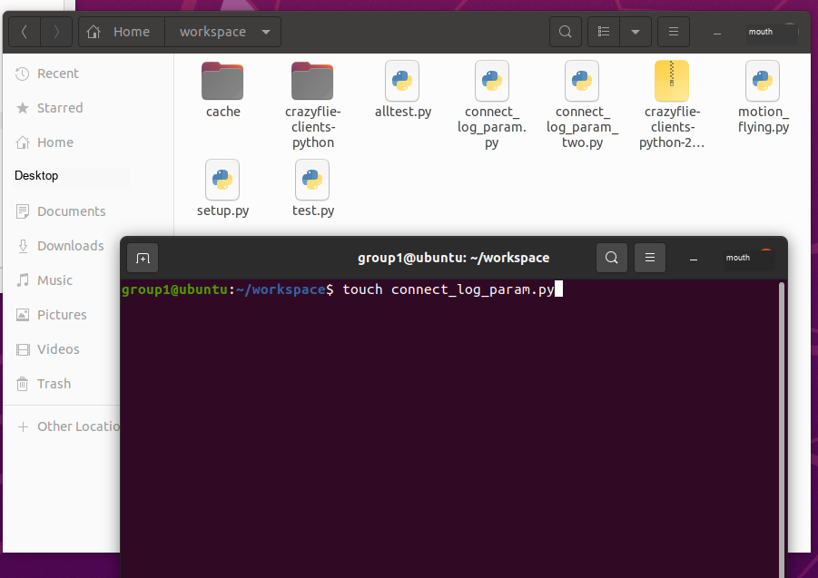

Experiment 9: cflib Programming
Confirm the Group URI Before Running
Python scripts in this experiment read the complete radio URI assigned in Experiment 3 from the CFLIB_URI environment variable. Do not copy the group address into every code file. In each new terminal, check it first:
echo "$CFLIB_URI"The output must exactly match the complete URI on the group label, including the interface, channel, data rate, and address. If it is empty or incorrect, repeat the “Save the complete URI in the virtual machine” step in Experiment 3 before running the script.
1. Experimental goals
Learn to connect to Crazyflie via a python script.
Learn the basics of programming with the cflib library.
Learn to use wireless connections to monitor flight data in the terminal.
2. Experimental preparation
Experiment 4 has configured the virtual machine system of the client connected to the drone. And you need to have the Linux system operating experience accumulated in the previous experiments. A little more basic python programming is needed.
3. Experimental steps
This experiment mainly runs Python scripts. Open the Bitcraze cflib User Guides directly:
https://www.bitcraze.io/documentation/repository/crazyflie-lib-python/master/user-guides/If you encounter difficulties during the experiment, open the URL listed above for further reference. Some operations and knowledge points are also mentioned in the previous experiment manual; this part is not repeated here.
Use cflib programming to connect to drones wirelessly
Use the touch command in the workspace terminal to create a python file, as shown in the figure below.
touch connect_log_param.py
Click the created file directly on the graphical interface to directly edit it graphically. If you have some spare time, you can also choose your own editor.
For a python program, we first import the standard python library in lines 1 and 2, and then import the cflib library in lines 4 to 6. This section of the experiment will also mainly introduce you to some usages of the cflib library. In this section of the experiment, we will understand how to use the python language to call the cflib library and use the wireless module crazyradio to connect to the drone.
In line 11 we define a function called simple_connect. The main content of the function is to output the characters "Yeah, I'm connected! :D" to the terminal, then the program keeps sleeping for 3 seconds, and then outputs the characters "Now I will disconnect :'(".
On line 17, we start our python main program. First, on line 19, we call the cflib library function to initialize the drone equipment. Then, on line 21, we will create a synchronous Crazyflie instance with a specified link_uri and create it through a wireless connection. Starting from line 21, the main program we set will be executed here. If there are no looping program statements to keep the program executing, the synchronous Crazyflie instance will be automatically destroyed after the statements are executed in sequence, the wireless connection will be disconnected, and the program will end.
import logging
import time
import cflib.crtp
from cflib.crazyflie import Crazyflie
from cflib.crazyflie.syncCrazyflie import SyncCrazyflie
from cflib.utils import uri_helper
uri = uri_helper.uri_from_env(default='')
if not uri:
raise RuntimeError('CFLIB_URI is empty; configure the group URI first.')
def simple_connect():
print("Yeah, I'm connected! :D")
time.sleep(3)
print("Now I will disconnect :'(")
if __name__ == '__main__':
# Initialize the low-level drivers
cflib.crtp.init_drivers()
with SyncCrazyflie(uri, cf=Crazyflie(rw_cache='./cache')) as scf:
simple_connect()Now paste the above python code into the newly created onnect_log_param.py file. Remember to click Save and then run it using the following command:
python3 connect_log_param.pyPay attention to ensure that the crazyradio wireless device is plugged into the computer and can be recognized, the drone remains turned on, and remember to modify the corresponding URI address.
After running the program, observe the output of the terminal, then call the simple_connect() function again on line 24, and then observe the output of the terminal in order to understand the operation of the python program.
Use cflib to record the flight parameters of the drone during operation
Based on the original python program, we made the following modifications (can be copied and pasted directly):
import logging
import time
import cflib.crtp
from cflib.crazyflie import Crazyflie
from cflib.crazyflie.syncCrazyflie import SyncCrazyflie
from cflib.crazyflie.log import LogConfig
from cflib.crazyflie.syncLogger import SyncLogger
from cflib.utils import uri_helper
uri = uri_helper.uri_from_env(default='')
if not uri:
raise RuntimeError('CFLIB_URI is empty; configure the group URI first.')
# Only output errors from the logging framework
logging.basicConfig(level=logging.ERROR)
def log_stab_callback(timestamp, data, logconf):
print('[%d][%s]: %s' % (timestamp, logconf.name, data))
def simple_log_async(scf, logconf):
cf = scf.cf
cf.log.add_config(logconf)
logconf.data_received_cb.add_callback(log_stab_callback)
logconf.start()
time.sleep(5)
logconf.stop()
if __name__ == '__main__':
# Initialize the low-level drivers
cflib.crtp.init_drivers()
lg_stab = LogConfig(name='Stabilizer', period_in_ms=100)
lg_stab.add_variable('stabilizer.roll', 'float')
lg_stab.add_variable('stabilizer.pitch', 'float')
lg_stab.add_variable('stabilizer.yaw', 'float')
with SyncCrazyflie(uri, cf=Crazyflie(rw_cache='./cache')) as scf:
simple_log_async(scf, lg_stab)Compare what this program adds compared to the previous program. When running this program, the terminal will cyclically output the three parameters of roll, pitch and yaw of the drone within 5 seconds. At this time, if you hold the drone in your hand and change its posture, you will observe the changes in the terminal output parameters.
The Roll (roll), Pitch (pitch) and Yaw (yaw) of a quad-rotor UAV are the three core parameters that describe its spatial attitude, corresponding to the rotational motion of the UAV around the X-axis, Y-axis and Z-axis respectively.

Meet motion commander
In the previous lesson, we ran a simple python program for taking off and landing a drone. This experiment will lead you to understand the details of the python program in detail. Similarly, use the touch command to create a file named motion_flying.py.
touch motion_flying.pyPaste the following code into the file:
import logging
import sys
import time
from threading import Event
import cflib.crtp
from cflib.crazyflie import Crazyflie
from cflib.crazyflie.log import LogConfig
from cflib.crazyflie.syncCrazyflie import SyncCrazyflie
from cflib.positioning.motion_commander import MotionCommander
from cflib.utils import uri_helper
URI = uri_helper.uri_from_env(default='')
if not URI:
raise RuntimeError('CFLIB_URI is empty; configure the group URI first.')
deck_attached_event = Event()
logging.basicConfig(level=logging.ERROR)
def param_deck_flow(_, value_str):
value = int(value_str)
print(value)
if value:
deck_attached_event.set()
print('Deck is attached!')
else:
print('Deck is NOT attached!')
if __name__ == '__main__':
cflib.crtp.init_drivers()
with SyncCrazyflie(URI, cf=Crazyflie(rw_cache='./cache')) as scf:
scf.cf.param.add_update_callback(group='deck', name='bcFlow2',
cb=param_deck_flow)
time.sleep(1)As you can see, we imported the motioncommander module in cflib on line 10. We will call this module to fly the drone. For detailed class functions, refer to the source archive in the Course Materials Package: course-materials/05_source_references/crazyflie-lib-python-master.zip.
The main function of this python program is to detect whether the flowdeck module is installed on the current drone during the initialization process of the drone. This module helps the drone locate its own height and detect flight speed.
Take-off function
Replace motion_flying.py with the complete copyable version below. The drone takes off, hovers for 3 seconds, and then lands automatically. DEFAULT_HEIGHT sets the default takeoff height; keep it low for the first test and confirm the emergency-stop procedure.
import logging
import sys
import time
from threading import Event
import cflib.crtp
from cflib.crazyflie import Crazyflie
from cflib.crazyflie.syncCrazyflie import SyncCrazyflie
from cflib.positioning.motion_commander import MotionCommander
from cflib.utils import uri_helper
URI = uri_helper.uri_from_env(default='')
if not URI:
raise RuntimeError('CFLIB_URI is empty; configure the group URI first.')
DEFAULT_HEIGHT = 0.35
deck_attached_event = Event()
logging.basicConfig(level=logging.ERROR)
def param_deck_flow(_, value_str):
value = int(value_str)
print(value)
if value:
deck_attached_event.set()
print('Deck is attached!')
else:
print('Deck is NOT attached!')
def request_arming(scf, armed):
for service_name in ('platform', 'supervisor'):
service = getattr(scf.cf, service_name, None)
request = getattr(service, 'send_arming_request', None)
if request is not None:
request(armed)
return
raise RuntimeError('This cflib version has no arming service.')
def take_off_simple(scf):
with MotionCommander(scf, default_height=DEFAULT_HEIGHT) as mc:
time.sleep(3)
mc.stop()
if __name__ == '__main__':
cflib.crtp.init_drivers()
with SyncCrazyflie(URI, cf=Crazyflie(rw_cache='./cache')) as scf:
scf.cf.param.add_update_callback(
group='deck',
name='bcFlow2',
cb=param_deck_flow,
)
time.sleep(1)
if not deck_attached_event.wait(timeout=5):
print('No flow deck detected!')
sys.exit(1)
armed = False
try:
request_arming(scf, True)
armed = True
time.sleep(1.0)
take_off_simple(scf)
finally:
if armed:
request_arming(scf, False)Forward, turn and reverse
Add the copyable move_linear_simple function below before the main function, and replace the final take_off_simple(scf) call with move_linear_simple(scf). After takeoff, the drone hovers for 1 second, moves forward 0.5 m, hovers again, moves back 0.5 m, and then lands.
def move_linear_simple(scf):
with MotionCommander(scf, default_height=DEFAULT_HEIGHT) as mc:
time.sleep(1)
mc.forward(0.5)
time.sleep(1)
mc.back(0.5)
time.sleep(1)To demonstrate turning and returning, replace move_linear_simple with the copyable version below:
def move_linear_simple(scf):
with MotionCommander(scf, default_height=DEFAULT_HEIGHT) as mc:
time.sleep(1)
mc.forward(0.5)
time.sleep(1)
mc.turn_left(180)
time.sleep(1)
mc.forward(0.5)
time.sleep(1)Observe the operation of the drone to see if it returns to the place where it took off.
Record flight data
The complete copyable program below records live position data. log_pos_callback updates the position estimate, while param_deck_flow checks whether the Flow deck is connected.
Download the reviewed script: logged_motion_sequence.py
#!/usr/bin/env python3
"""Finite MotionCommander route with 10 Hz position logging."""
import threading
import time
import cflib.crtp
from cflib.crazyflie import Crazyflie
from cflib.crazyflie.log import LogConfig
from cflib.crazyflie.syncCrazyflie import SyncCrazyflie
from cflib.positioning.motion_commander import MotionCommander
from cflib.utils import uri_helper
URI = uri_helper.uri_from_env(default="")
flow_deck_attached = threading.Event()
def request_arming(scf, armed):
for service_name in ("platform", "supervisor"):
service = getattr(scf.cf, service_name, None)
request = getattr(service, "send_arming_request", None)
if request is not None:
request(armed)
return
raise RuntimeError("This cflib version has no arming service.")
def flow_deck_callback(name, value):
if int(value):
flow_deck_attached.set()
def position_callback(timestamp, data, log_config):
print(
"x=%.3f y=%.3f"
% (float(data["stateEstimate.x"]), float(data["stateEstimate.y"]))
)
def main():
if not URI:
raise RuntimeError("CFLIB_URI is empty; configure the group URI first.")
cflib.crtp.init_drivers()
with SyncCrazyflie(URI, cf=Crazyflie(rw_cache="./cache")) as scf:
scf.cf.param.add_update_callback(
group="deck", name="bcFlow2", cb=flow_deck_callback
)
time.sleep(1.0)
if not flow_deck_attached.wait(timeout=5.0):
raise RuntimeError("Flow deck was not detected; takeoff cancelled.")
position_log = LogConfig(name="Position", period_in_ms=1000)
position_log.add_variable("stateEstimate.x", "float")
position_log.add_variable("stateEstimate.y", "float")
scf.cf.log.add_config(position_log)
position_log.data_received_cb.add_callback(position_callback)
log_started = False
armed = False
try:
position_log.start()
log_started = True
request_arming(scf, True)
armed = True
time.sleep(1.0)
with MotionCommander(scf, default_height=0.35) as commander:
time.sleep(1.0)
commander.forward(0.50, velocity=0.20)
time.sleep(1.0)
commander.turn_left(180)
time.sleep(1.0)
commander.forward(0.50, velocity=0.20)
time.sleep(1.0)
finally:
if log_started:
position_log.stop()
if armed:
request_arming(scf, False)
if __name__ == "__main__":
main()
Executing the code again, you can see that the terminal is constantly outputting its flight parameters while the drone is flying.
Wandering back and forth
The complete copyable program below includes move_box_limit. Before running it, confirm that position logging updates correctly and assign one team member to emergency-stop duty.
Download the reviewed script: flow_box_bounce.py
#!/usr/bin/env python3
"""Bounded Flow-deck position exercise with stale-log and time limits."""
import threading
import time
import cflib.crtp
from cflib.crazyflie import Crazyflie
from cflib.crazyflie.log import LogConfig
from cflib.crazyflie.syncCrazyflie import SyncCrazyflie
from cflib.positioning.motion_commander import MotionCommander
from cflib.utils import uri_helper
URI = uri_helper.uri_from_env(default="")
DEFAULT_HEIGHT_M = 0.35
BOX_LIMIT_M = 0.35
MAX_VELOCITY_MPS = 0.15
MAX_FLIGHT_TIME_S = 45.0
LOG_STALE_TIMEOUT_S = 0.60
flow_deck_attached = threading.Event()
position_lock = threading.Lock()
position_estimate = [0.0, 0.0]
last_position_update = 0.0
def request_arming(scf, armed):
for service_name in ("platform", "supervisor"):
service = getattr(scf.cf, service_name, None)
request = getattr(service, "send_arming_request", None)
if request is not None:
request(armed)
return
raise RuntimeError("This cflib version has no arming service.")
def flow_deck_callback(name, value):
if int(value):
flow_deck_attached.set()
def position_callback(timestamp, data, log_config):
global last_position_update
with position_lock:
position_estimate[0] = float(data["stateEstimate.x"])
position_estimate[1] = float(data["stateEstimate.y"])
last_position_update = time.monotonic()
def move_box_limit(scf):
body_x = MAX_VELOCITY_MPS
body_y = MAX_VELOCITY_MPS * 0.5
deadline = time.monotonic() + MAX_FLIGHT_TIME_S
with MotionCommander(scf, default_height=DEFAULT_HEIGHT_M) as commander:
while time.monotonic() < deadline:
with position_lock:
x, y = position_estimate
update_age = time.monotonic() - last_position_update
if update_age > LOG_STALE_TIMEOUT_S:
commander.stop()
raise RuntimeError("Position log is stale; landing.")
if x >= BOX_LIMIT_M:
body_x = -MAX_VELOCITY_MPS
elif x <= -BOX_LIMIT_M:
body_x = MAX_VELOCITY_MPS
if y >= BOX_LIMIT_M:
body_y = -MAX_VELOCITY_MPS
elif y <= -BOX_LIMIT_M:
body_y = MAX_VELOCITY_MPS
commander.start_linear_motion(body_x, body_y, 0.0)
time.sleep(0.1)
commander.stop()
def main():
if not URI:
raise RuntimeError("CFLIB_URI is empty; configure the group URI first.")
cflib.crtp.init_drivers()
with SyncCrazyflie(URI, cf=Crazyflie(rw_cache="./cache")) as scf:
scf.cf.param.add_update_callback(
group="deck", name="bcFlow2", cb=flow_deck_callback
)
time.sleep(1.0)
if not flow_deck_attached.wait(timeout=5.0):
raise RuntimeError("Flow deck was not detected; takeoff cancelled.")
position_log = LogConfig(name="Position", period_in_ms=1000)
position_log.add_variable("stateEstimate.x", "float")
position_log.add_variable("stateEstimate.y", "float")
scf.cf.log.add_config(position_log)
position_log.data_received_cb.add_callback(position_callback)
log_started = False
armed = False
try:
position_log.start()
log_started = True
if not wait_for_first_position(timeout=2.0):
raise RuntimeError("No position log data; takeoff cancelled.")
request_arming(scf, True)
armed = True
time.sleep(1.0)
move_box_limit(scf)
finally:
if log_started:
position_log.stop()
if armed:
request_arming(scf, False)
def wait_for_first_position(timeout):
deadline = time.monotonic() + timeout
while time.monotonic() < deadline:
with position_lock:
if last_position_update > 0.0:
return True
time.sleep(0.05)
return False
if __name__ == "__main__":
main()
Run the script and you will see that the drone will start moving back and forth until you press ctrl+c to stop the program. It changes its commands based on logging input, i.e. state estimates of x and y positions. Once it indicates that it has reached the boundary of its "virtual" limits, it changes its direction.